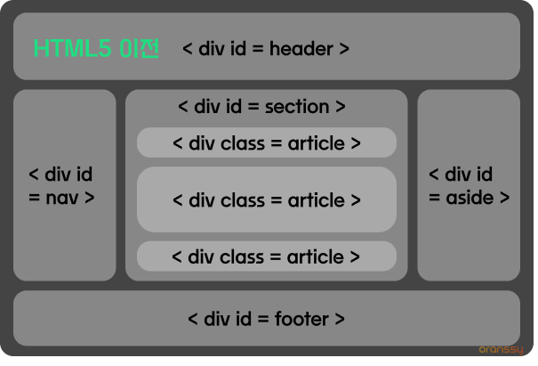
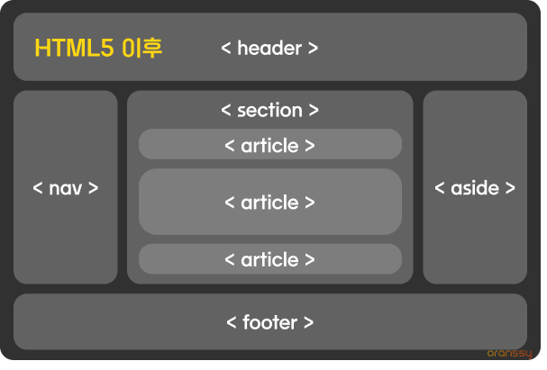

HTML 레퍼런스 북
⭐️ 시멘틱 마크업 ⭐️
01.시멘틱 마크업 이란?
시멘틱 마크업(Semantic markup)이란, HTML 문서의 코드를 사람과 브라우저 모두가 이해할 수 있도록 의미에 맞는 요소를 사용하여 구조화하는 것을 말합니다.
시각 장애인의 경우, 스크린 리더기를 통해 HTML 문서의 구조와 의미를 파악하므로 시멘틱 마크업은 웹 접근성을 위한 중요한 작업입니다.
참고하기
1시멘틱 (semantic)
시멘틱은 '의미론적인'을 뜻하며, 이는 마크업할 때 '의미에 부합하는 요소를 사용하라'는 의미입니다.
2마크업 (markup)
마크업은 표시를 하여 문서를 구조화한다는 뜻이며, 태그를 포함하는 ' 요소(element)들로 코딩하는 것 '을 의미합니다.
웹 브라우저가 해독할 수 있도록 문서를 논리적으로 구조화하는 규칙을 정의한 언어를 ' 마크업 언어 '라고 합니다.
3마크업의 종류
표현적 마크업 문서의 형태를 표현하기 위한 마크업 ex) style 요소
절차적 마크업 프로그램이 문서를 처리하는 방법을 서술하는 마크업 ex) LaTeX
기술적 (범용적) 마크업 문서가 표현하는 내용을 기술하는 마크업 ex) HTML, 마크다운
1HTML5 전후의 태그 비교
과거에는 대부분의 구조를 < div > 요소로 구성했습니다.
< div > 요소를 구분하기 위해 클래스 또는 아이디를 사용했고, 개발자들이 자주 사용하는 클래스와 아이디 명이 굳어졌습니다.
이렇게 굳어진 클래스와 아이디 명을 HTML5 에서 시멘틱 구조 요소(태그)로 정의하였습니다.
| HTML5 이전 | HTML5 이후 |
|---|---|
|  |  |
2마크업 기본 문법
1요소는 여는 태그로 시작하고, 닫는 태그로 종료합니다.
<p>문을 열고 나서 잘 닫아주세요!</p>참고하기
1'빈 요소 (empty elements)'는 내용과 종료 태그 없이 단독으로 사용합니다.
< br > 줄바꿈 요소
< img > 이미지 삽입 요소
2중첩된 요소는 바깥 요소의 태그 안쪽에 바르게 넣어줍니다.
<p>밖에 있는 부모 요소로 <i>안에 있는 자식 요소</i>를 감싸주세요!</p>3웹 접근성을 위해 요소의 속성 값을 입력합니다.
<img src="assets/img/이미지태그_alt속성.jpg" alt="이미지를 볼 수 없는 환경에서도 이미지에 대한 정보를 제공하기 위함입니다.">4공동 작업을 위해 주석 처리를 합니다.
<!-- VScode 에서 주석 단축키 : " ctrl + / " -->
<!-- 오른쪽에서 왼쪽으로 넘어오는 슬라이드를 구현합니다. -->
<!-- slider__wrap --> // 시작하는 부분의 주석
<div class="slider__wrap">
( ... 자식 요소 생략 )
</div>
<!-- //slider__wrap --> // 끝나는 부분의 주석
참고하기
1주석 내용은 브라우저에 출력되지 않습니다.
2주석은 요소의 시작 태그의 위 또는 종료 태그의 아래에 입력하며, 보통은 시작 주석 또는 종료 주석 둘 중 하나만 적습니다.
일반적으로 시작 태그의 주석에는 요소에 대한 설명이나 요소의 작동 구현에 대해 적고,
종료 태그의 주석에는 다른 요소의 닫는 태그와 구분되도록 요소의 id 또는 class 이름을 적어줍니다.
3주석은 복잡한 중첩구조로 짜여진 요소들을 구분하여, 코드의 가독성을 높이기 위해 사용합니다.
주석을 남발하면 오히려 가독성이 떨어지므로, 적절히 사용해야 합니다.
5소문자 사용, 속성값 따옴표 처리
HTML5에서 대소문자를 구분하지 않지만 되도록 소문자로 마크업하고, 속성 값을 따옴표로 처리하는 것을 권장합니다.
02.시멘틱 마크업 방법
1적절한 요소 사용하기
콘텐츠의 내용에 따라 의미에 맞는 요소를 사용합니다.
<!DOCTYPE html>
<html lang="ko">
<head>
<meta charset="UTF-8">
<title>시멘틱 마크업</title>
</head>
<body>
시멘틱 마크업 방법 // 제목이므로 h1 요소 사용 -> <h1>시멘틱 마크업 방법</h1>
의미에 맞는 요소 사용하기 // 문단 내용이므로 p 요소 사용 -> <p>의미에 맞는 요소 사용하기</p>
</body>
</html>
1요소의 유형과 특성
요소는 '줄 바꿈' 특성이 적용되는지에 따라 블록 레벨 요소와 인라인 레벨 요소로 구분하여 사용해왔습니다.
| 요소 유형 | 설명 | 특성 |
|---|---|---|
|
블록 레벨 요소 (Block-level Elements) |
출력 화면에서 사용 가능한 최대 너비를 차지하는 요소를 의미합니다. | 출력 화면에서 하나의 블록 요소는 한 줄을 차지하므로, 다음 요소는 열이 바뀌며 줄 바꿈이 적용됩니다. |
| CSS에서 width, height, margin, padding에 대한 속성 값을 정할 수 있습니다. | ||
| 문자(Text)와 인라인 요소를 자식 요소로 가질 수 있습니다. | ||
| 블록 요소 중에는 블록 요소를 자식 요소로 가질 수 있는 요소와 가질 수 없는 요소가 있습니다. | ||
|
인라인 레벨 요소 (Inline-level Elements) |
출력 화면에서 필요한 너비만 차지하며, 하나의 줄 안에 포함되는 요소를 의미합니다. | 출력 화면에서 하나의 인라인 요소는 콘텐츠 내용의 크기만큼만 공간을 차지하므로, 열이 바뀌지 않고 한줄로 나란히 출력됩니다. |
| width, height에 대한 속성 값을 지정해도반영되지 않습니다. | ||
|
margin에 대한 속성 값은 요소 위치의 좌우에만 반영됩니다. ☛ 상,하단 여백은 margin이 아니라 line-height에 대한 속성 값으로 지정합니다. ☛ 인라인 요소가 연속으로 사용되는 경우, 최소한의 간격을 유지하기 위해 좌우에 약 5px의 기본적인 외부 여백이 생깁니다. |
||
|
padding에 대한 속성 값은 요소 위치의 좌우에만 반영됩니다. ☛ 아래의 예시를 보면, <i>의 padding 값이 하단에 반영된 것처럼 보입니다. 그러나 줄이 넘어가면 <i>의 padding 값이 하단 공간을 차지하지 않아 글자가 위로 올라온 것을 확인할 수 있습니다. |
||
| 문자(Text)와 인라인 요소를 자식 요소로 가질 수 있습니다. | ||
| 블록 요소를 자식 요소로 포함할 수 없습니다. |
참고하기
1CSS에서 요소의 특성 바꾸기
display 속성은 요소의 특성을 블록과 인라인 중에서 적용하고, 자식요소의 레이아웃 배치 방법을 설정합니다.
display: block; 블록 특성으로 바꾸기
display: inline; 인라인 특성으로 바꾸기
display: inline-block; 인라인이면서 블록 특성을 가지도록 바꾸기 ☛ 기본적으로 한 줄에 나란히 배치, width 와 height 값 설정 가능
2콘텐츠 모델 (Content-models)
블록과 인라인으로만 구분되던 요소들은 HTML5 - 콘텐츠 모델에서부터 명확한 역할 수행, 비슷한 특성 요소들의 그룹화가 이루어졌습니다.
| 콘텐츠 종류 | 콘텐츠 설명 | 해당 요소 |
|---|---|---|
|
메타데이터 콘텐츠 (Metadata Content) |
<head> 요소 안에 포함되는 요소들 콘텐츠의 표현, 동작 설명, 문서 간 관계를 설정, 정보 전달을 포함하는 요소 |
<base>, <link>, <meta>, <noscript>, <script>, <style>, <template>, <title> |
|
플로우 콘텐츠 (Flow Content) |
<body> 요소 안에 포함되는 대부분의 요소 내용 흐름에 관한 요소 |
<a>, <abbr>, <address>, <area>, <article>, <aside>, <audio>, <b>, <bdi>, <bdo>, <blockquote>, <br>, <button>, <canvas>, <cite>, <code>, <data>, <datalist>, <del>, <details>, <dfn>, <dialog>, <div>, <dl>, <em>, <embed>, <fieldset>, <figure>, <footer>, <form>, <h1>, <h2>, <h3>, <h4>, <h5>, <h6>, <header>, <hgroup>, <hr>, <i>, <iframe>, <img>, <input>, <ins>, <kbd>, <label>, <link>, <main>, <map>, <mark>, <math>, <menu>, <meta>, <meter>, <nav>, <noscript>, <object>, <ol>, <output>, <p>, <picture>, <pre>, <progress>, <q>, <ruby>, <s>, <samp>, <script>, <section>, <slot>, <small>, <span>, <strong>, <sub>, <sup>, <svg>, <table>, <template>, <textarea>, <time>, <u>, <ul>, <var>, <video>, <wbr>, <autonomous custom elements>, <text> |
|
섹셔닝 콘텐츠 (Sectioning Content) |
제목과 내용을 포함하며, 범위를 정의하는 요소 헤더와 푸터의 범위를 정의하는 요소 |
<article>, <aside>, <nav>, <section> |
|
헤딩 콘텐츠 (Heading Content) |
섹션의 제목을 정의하는 요소 | <h1>, <h2>, <h3>, <h4>, <h5>, <h6>, <hgroup> |
|
프레이징 콘텐츠 (Phrasing Content) |
문자(Text)를 마크업하는 요소 | <a>, <abbr>, <area>, <audio>, <b>, <bdi>, <bdo>, <br>, <button>, <canvas>, <cite>, <code>, <data>, <datalist>, <del>, <dfn>, <em>, <embed>, <i>, <iframe>, <img>, <input>, <ins>, <kbd>, <label>, <link>, <map>, <mark>, <math>, <meta>, <meter>, <noscript>, <object>, <output>, <picture>, <progress>, <q>, <ruby>, <s>, <samp>, <script>, <select>, <slot>, <small>, <span>, <strong>, <sub>, <sup>, <svg>, <template>, <textarea>, <time>, <u>, <ul>, <var>, <video>, <wbr>, <autonomous custom elements>, <text>, |
|
임베디드 콘텐츠 (Embedded Content) |
HTML 문서에 다른 리소스를 삽입하는 요소 | <audio>, <canvas>, <embed>, <iframe>, <img>, <math>, <object>, <picture>, <svg>, <video> |
|
인터랙티브 콘텐츠 (Interactive Content) |
사용자와의 상호작용을 위한 요소 | <a>, <audio>, <button>, <details>, <embed>, <iframe>, <img>, <input>, <label>, <select>, <textarea>, <video> |
2논리적 순서 마크업 (Logical sequence markup)
내용의 논리적 흐름을 파악하고, 이에 따른 순서대로 마크업 합니다.
이를 통해 웹 접근성 지침 중에서 '입력장치 접근성'을 준수할 수 있으며, Tab 키 또는 터치패드 등으로 HTML 문서의 모든 콘텐츠를 논리적 순서대로 이동하여 사용할 수 있습니다.
논리적 순서 마크업의 예